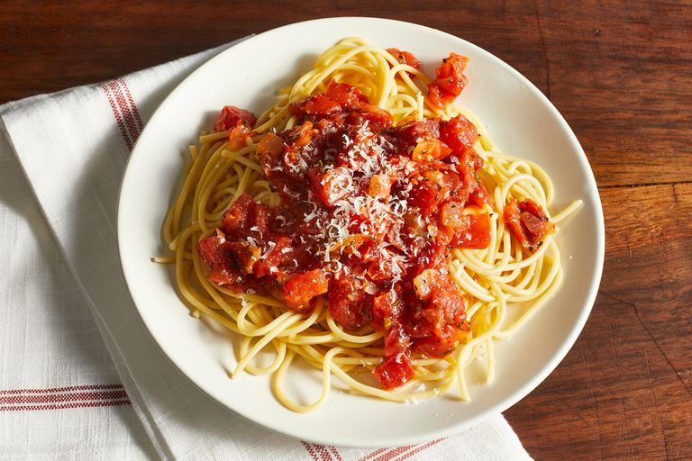

Dad's Spaghetti Sauce

A little History
Having a family with Italian roots, of course spaghetti would be a specialty of mine. The funny thing is, this is my no means a family recipe. Just something some tried and true practise was able to teach me. I pretty much cook this once a week- & my daughter loves it. Follow a long, and soon you will be cooking this weekly!
Ingredients
- 1 lb of lean hamburger meat
- 1 16 oz can of Bertoli Garlic and Olive Oil Spghateti Sauce
- 2 teaspons of Onion flakes
- 1 teaspoon of garlic
- 1 teasppon of Salt
- 2 teaspoons of Pepper
- 1 teasppon of Italian Seasoning
Instructions
- Place Hamburger meat in greased skillet (olive oil preferred)
- Add salt, pepper, garlic, onion, and Italian seasoning
- Brown until done. (about 10 minutes)
- Pour in Spaghetti Sauce and simmer for 20 minutes
Home